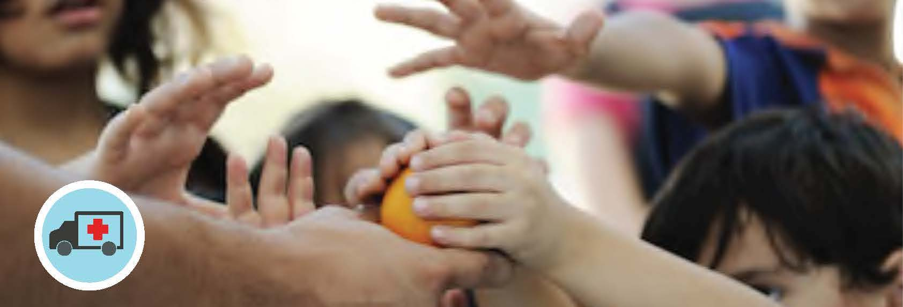

OUR APPROACH
We deploy our experts in crisis situations, conflict-ridden areas, during natural disasters and epidemics around the world. We intervene to provide medical and mental health support, clean water, sanitation, and hygiene (WASH), food, protection, and shelter where possible.
We take a holistic approach to health in our programming, which includes the protection of nature. We work with local resources and engage local partners,to provide rapid and effective responses in even the most remote locations.
People are at the center of our assistance. Our goal is to sustainably increase the resilience of those worst affected by disasters. In doing so, we extend our support to all individuals in need regardless of gender, political belief, origin, or faith.
